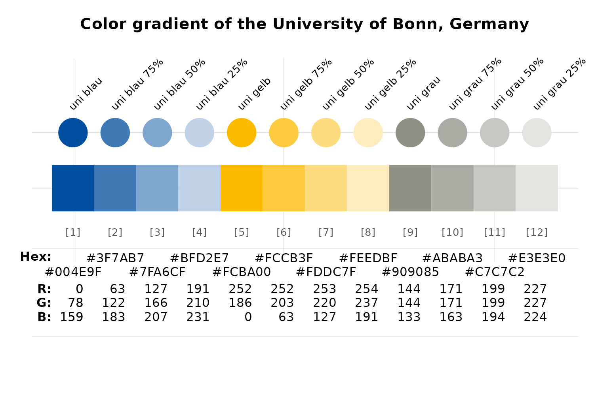
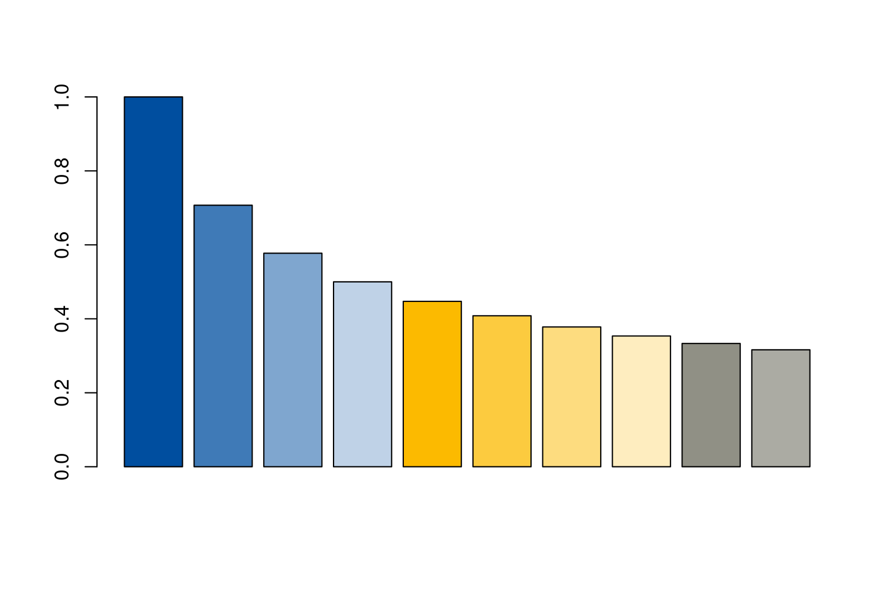
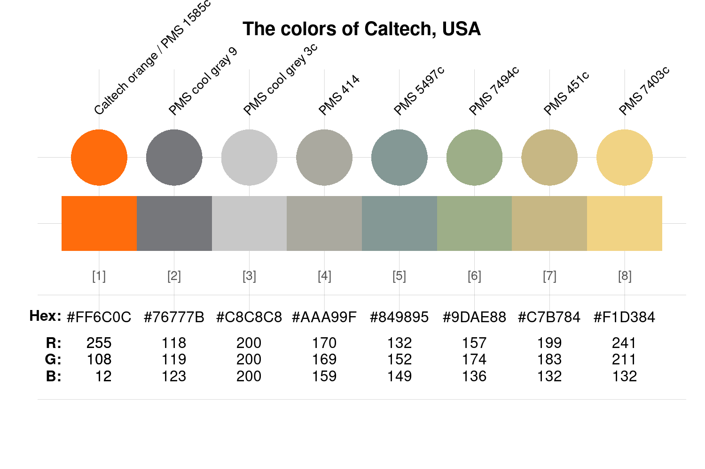
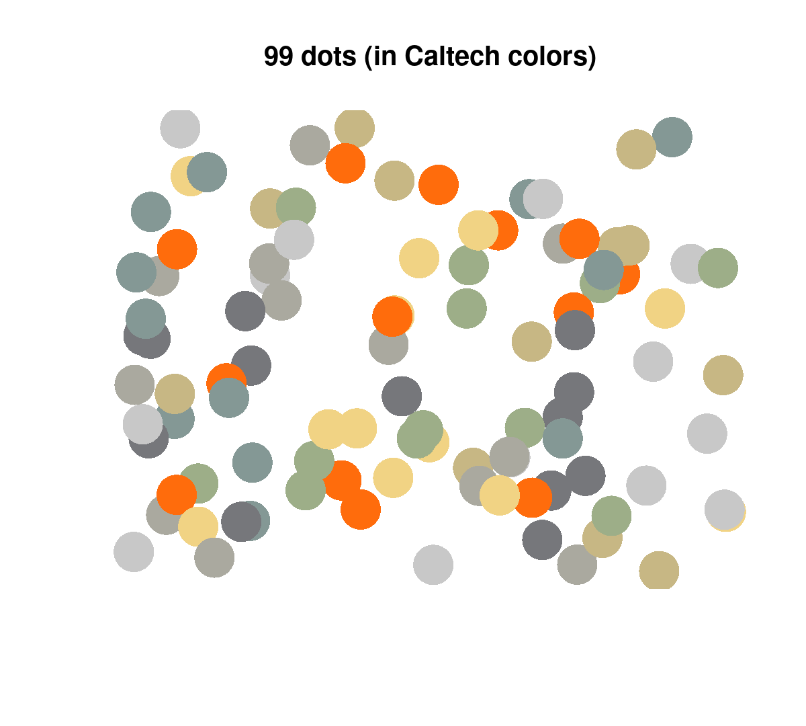
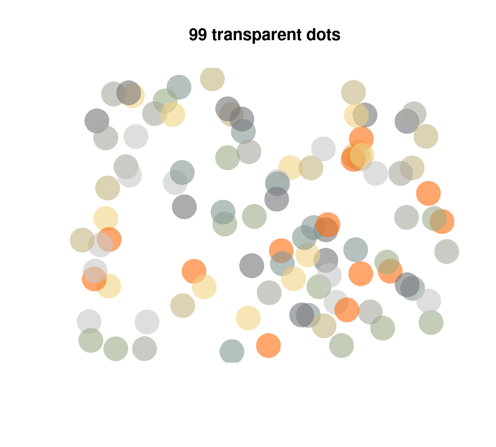
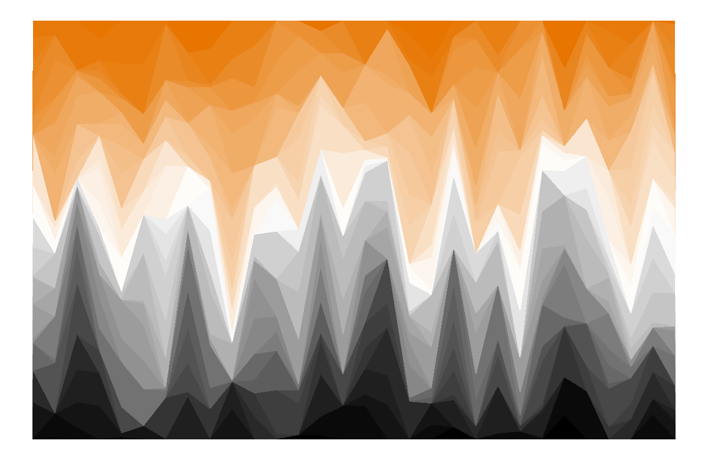

This vignettes shows how to use the color palettes included in the unicol R package. (See the vignette on Color palettes for an overview of the palettes included in the package.)
We install or load the unicol package to get started:
Loading the unicol package automatically makes the color functions of the required unikn package available.
Using colors in base R
Task: Using unicol colors in visualizations created by base R graphics.
The unicol color palettes are typically provided as
named vectors of color objects. Thus, when creating
base R visualizations (e.g., using plot()
for creating a scatterplot), we can directly use a color palette as the
col argument.
For instance, let’s assume we wanted to create a bar chart using the
color palette uni_bonn_2 (of the University of Bonn, Germany):
# View color palette:
unikn::seecol(uni_bonn_2, main = "Color gradient of the University of Bonn, Germany")
We can simply provide the color palette to the col
argument of the barplot() function:

In case we want to modify a color palette (e.g., change its number of
colors or add transparency) before using it, we can do so by using the
usecol() function of the unikn
package before providing the modified palette as the
col argument of an R graphics function. The following
examples illustrate both of these alternatives.
# View color palette:
unikn::seecol(caltech_1, main = "The colors of Caltech, USA")
- Directly using a color palette (e.g., the color
palette
caltech_1):
plot(x = runif(99), y = runif(99), type = "p",
pch = 16, cex = 4,
col = caltech_1,
main = "99 dots (in Caltech colors)", axes = FALSE, xlab = NA, ylab = NA)
- Using a transformed color palette (after using the
usecol()function of the unikn package for resizing and adding transparency to the palette):
my_col <- unikn::usecol(caltech_1, alpha = .60) # with transparency
plot(x = runif(99), y = runif(99), type = "p",
pch = 16, cex = 4,
col = my_col,
main = "99 transparent dots", axes = FALSE, xlab = NA, ylab = NA)
Using colors in ggplot2
Task: Using unicol colors in visualizations created by the ggplot2 package.
When using the ggplot() function of
ggplot2 (e.g., for creating an area plot), we wrap the
color palette in the usecol() function (of the
unikn package) for defining a color palette (of the
desired length and transparency). The resulting color palette can then
be provided as the values of ggplot2’s
scale_color_manual() or scale_fill_manual()
functions:
Wrap the desired color palette in the
usecol()function of unikn.Provide this palette as the
valuesof the ggplot2 functionsscale_color_manual()orscale_fill_manual().
# 0. Create some data to plot: ----
# Example based on https://www.r-graph-gallery.com/137-spring-shapes-data-art/
n <- 50
groups <- 1:n
df <- data.frame()
set.seed(3)
for (i in seq(1:30)){
data = data.frame(matrix(0, n, 3))
data[, 1] <- i
data[, 2] <- sample(groups, nrow(data))
data[, 3] <- prop.table(sample(c(rep(0, 100), c(1:n)), nrow(data)))
df = rbind(df, data)}
names(df) <- c("X","Group","Y")
df$Group <- as.factor(df$Group)
df <- df[c(2, 1, 3)]
df <- df[order(df$X, df$Group) , ]
rownames(df) <- NULL
my_data <- df
# # View data (as wider table):
# my_data_wider <- tidyr::pivot_wider(my_data, names_from = Group, names_prefix = "g_", values_from = Y)
# knitr::kable(my_data_wider, caption = "Viewing data (in wider format).")
# 1. Colors: ----
# A. Using RColorBrewer:
# library(RColorBrewer)
# my_pal <- brewer.pal(11, "Paired")
# my_pal <- colorRampPalette(my_pal)(n)
# my_pal <- my_pal[sample(c(1:length(my_pal)), size = length(my_pal))] # randomize
# B. Using unicol colors:
library(unicol)
# Mix a color gradient:
my_pal <- unikn::usecol(princeton_1, n = 50)
# my_pal <- my_pal[sample(c(1:length(my_pal)), size = length(my_pal))] # randomize
# 2. Plotting (with ggplot2): ----
library(ggplot2)
ggplot2::ggplot(my_data, aes(x = X, y = Y, fill = Group)) +
geom_area() +
scale_fill_manual(values = my_pal) +
theme_void() +
theme(legend.position = "none")
Resources
See the Color recipes vignette (of the unikn package) for solving color-related tasks like:
- Viewing and comparing color palettes
- Finding similar colors
- Finding colors by name
- Getting shades of a color
- Creating color gradients
- Creating new color palettes
Vignettes
The following vignettes provide an overview of and examples for using the unicol color palettes:
| Nr. | Vignette | Content |
|---|---|---|
| 1. | Color palettes | The color palettes of the unicol R package |
| 2. | Using color palettes | Recipes for using the unicol color palettes |